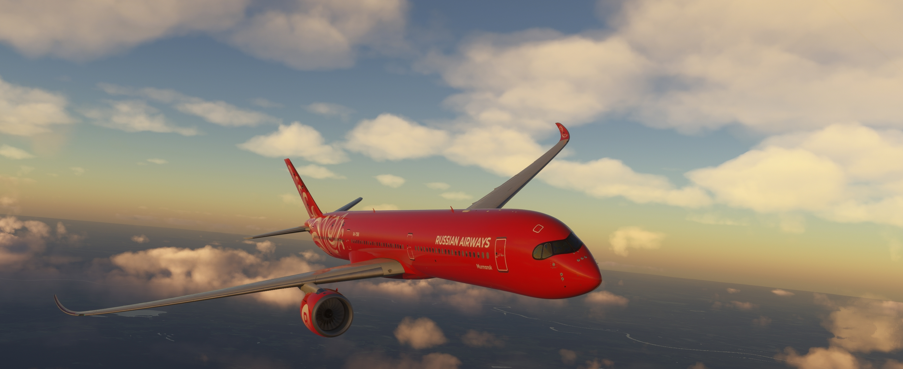

Russian Airways — российская виртуальная авиакомпания, объединяющая пилотов гражданской авиации со всей страны. Наша история началась в 2023 году, и за это время мы стали одной из наиболее стабильных и активно развивающихся виртуальных авиакомпаний в российском сегменте FSAirlines. Мы выполняем регулярные и чартерные рейсы по России, Европе, Азии, Северной Америке и другим регионам мира. В распоряжении наших пилотов находится разнообразный парк воздушных судов — от региональных самолётов до современных среднемагистральных и дальнемагистральных лайнеров. Сегодня Russian Airways располагает обширной маршрутной сетью, охватывающей сотни направлений и десятки аэропортов по всему миру. Наши пилоты уже выполнили более 11 000 рейсов и преодолели свыше 10 миллионов миль, подтверждая высокий уровень активности и вовлечённости сообщества. Мы ценим реализм, дисциплину, взаимоуважение и любовь к авиации. Независимо от опыта полётов, каждый пилот получает возможность развиваться, повышать квалификацию, осваивать новые типы воздушных судов и становиться частью большого авиационного коллектива. Добро пожаловать на борт Russian Airways!
Мы используем FSAirlines для учёта полётов, статистики, рейтингов и развития собственной системы достижений пилотов.
Заполните анкету кандидата, после чего администрация свяжется с вами для короткого собеседования и дальнейшего оформления в ВАК.
Заполнить анкетуЗагрузка пилотов...
| Дата | Пилот | Маршрут | Воздушное судно | |
|---|---|---|---|---|
| Загрузка... | ||||
Всего воздушных судов: 0
Загрузка флота...
Раздел наград находится в разработке.